16 | Operatore CdP
Gestione Piano accosti
Una panoramica dei flussi relativi alla creazione e previsione del piano accosti, per orientarti passo dopo passo.
- Profilo: Responsabile Locale - Accosti/Tecnica
01.
Inserimento piano accosti
Una panoramica sul flusso di inserimento del piano accosti.
Profilo: Responsabile Locale - Accosti/Tecnica
Inserimento piano accosti
Punto di accesso
Dalla dashboard è possibile accedere alle principali sezioni tramite le voci di menu.
Menu a tendina
Cliccando sulla voce "Gestione e Consultazione" viene visualizzato un menu a tendina, da cui è possibile accedere alla pagina di "Previsioni e piano accosti".

Inserimento piano accosti
Passaggi per inserire il piano accosti
L'utente può creare un piano accosti tramite i seguenti passaggi.
Pulsante nuovo piano accosti
All'interno della pagina "Previsioni e piano accosti" cliccare il pulsante "Nuovo piano accosti".
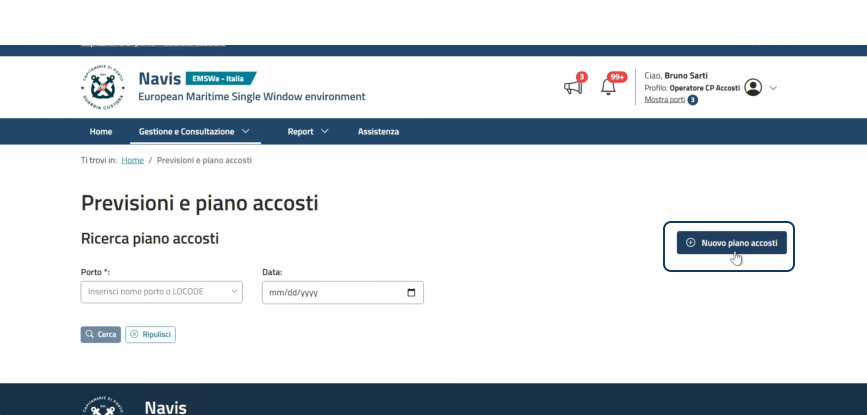
Inserimento informazioni piano accosti
Creare un nuovo piano accosti selezionando il porto e il periodo di riferimento, poi cliccare il pulsante "Genera Piani".
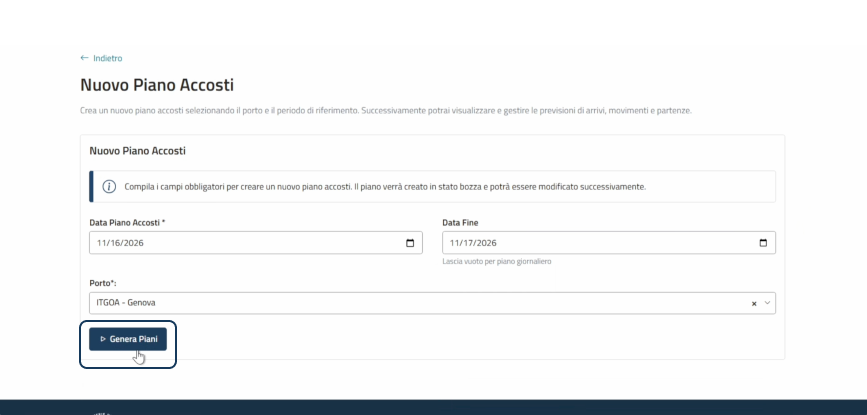
Finestra di successo
Il sistema mostra una finestra che conferma che i piani accosto sono stati creati con successo.
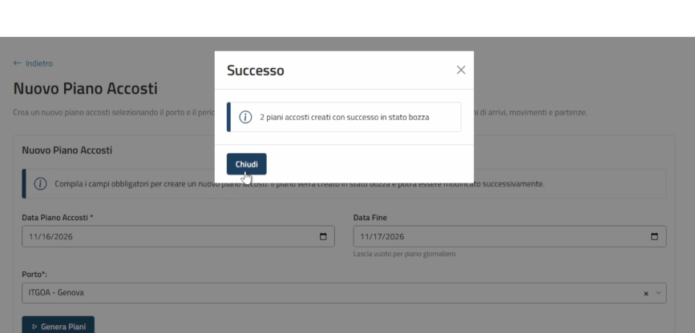
Elenco piano accosti
I piani accosto creati saranno aggiunti all'interno dell'"Elenco Piano accosti". È possibile entrare nel dettaglio di ognuno cliccando il pulsante con l'icona dell'occhio.
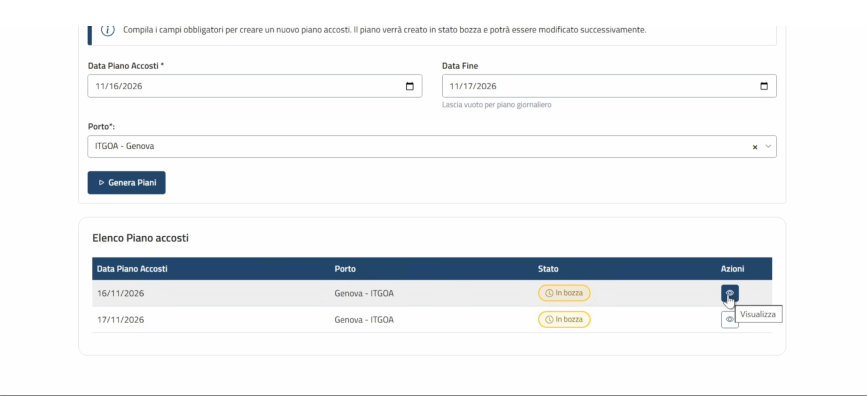
Il piano verrà creato in stato "Bozza" e potrà essere modificato successivamente.
02.
Ricerca piano accosti e previsioni
Una panoramica sul flusso di ricerca del piano accosti.
Profilo: Responsabile Locale - Accosti/Tecnica
Ricerca piano accosti e previsioni
Punto di accesso
Dalla dashboard è possibile accedere alle principali sezioni tramite le voci di menu.
Menu a tendina
Cliccando sulla voce "Gestione e Consultazione" viene visualizzato un menu a tendina, da cui è possibile accedere alla pagina di "Previsioni e piano accosti".
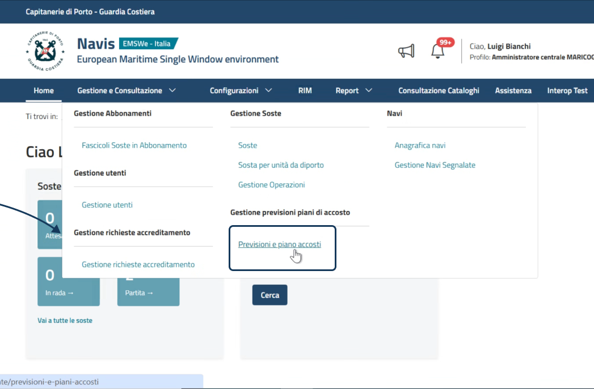
Ricerca e consultazione
Funzionalità in pagina
È possibile avviare la ricerca utilizzando i filtri disponibili.
La schermata è suddivisa nelle seguenti tre sezioni:
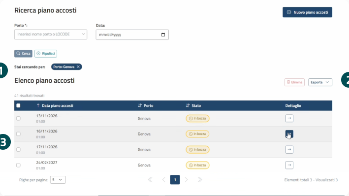
Filtri di ricerca
La sezione Filtri consente di ricercare i piani accosti secondo 2 diversi criteri: Porto e Data.
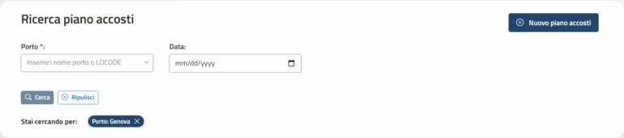
Azioni sulla tabella
È possibile sia esportare l'elenco dei piani accosti risultanti dalla ricerca, cliccando il pulsante "Esporta", sia eliminare uno o più piani accosto tramite il pulsante "Elimina".
Visualizzazione piani accosti tramite tabella
I risultati della ricerca vengono presentati in una tabella, mostrando le informazioni principali e le azioni disponibili per singolo piano accosti: vai al dettaglio.
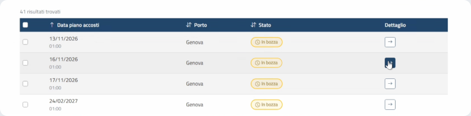
Ricerca e consultazione
Dettaglio Piano accosti
All'interno della pagina sono consultabili le seguenti informazioni:
- Arrivi;
- Movimenti;
- Partenze;
- Note.
Possibili azioni sui piani accosto
Possibili azioni secondarie sui piani accosto
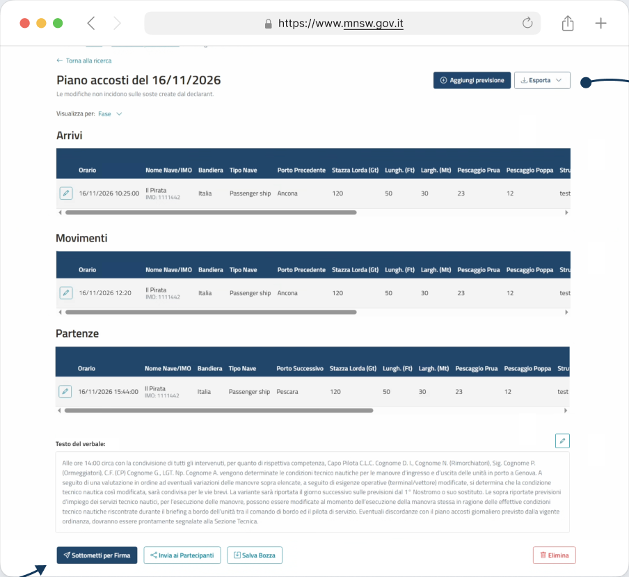
03.
Cancellazione piano accosti
Una panoramica sul flusso di cancellazione del piano accosti.
Profilo: Responsabile Locale - Accosti/Tecnica
Cancellazione piano accosti
Passaggi per cancellare un piano accosti da tabella
Dopo aver creato uno o più piani accosti, l'utente può eliminarli tramite i seguenti passaggi:
Cancellazione tramite risultati di ricerca
Nell'elenco risultati della ricerca è possibile eliminare i piani accosto selezionandone uno o più di uno attraverso la checkbox e successivamente cliccando il pulsante "Elimina".
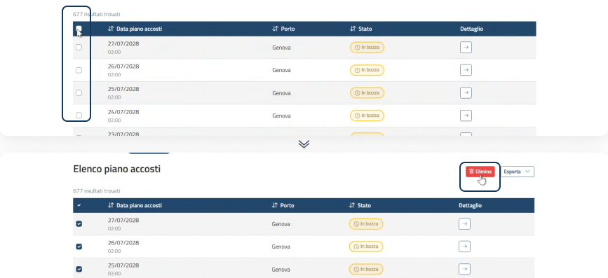
Finestra di conferma eliminazione e successo
Il sistema mostra una finestra in cui l'utente deve confermare di essere sicuro di voler eliminare i piani accosto. Cliccare "Elimina" per confermare. Una volta eliminati, il sistema mostra una finestra di successo dell'eliminazione.
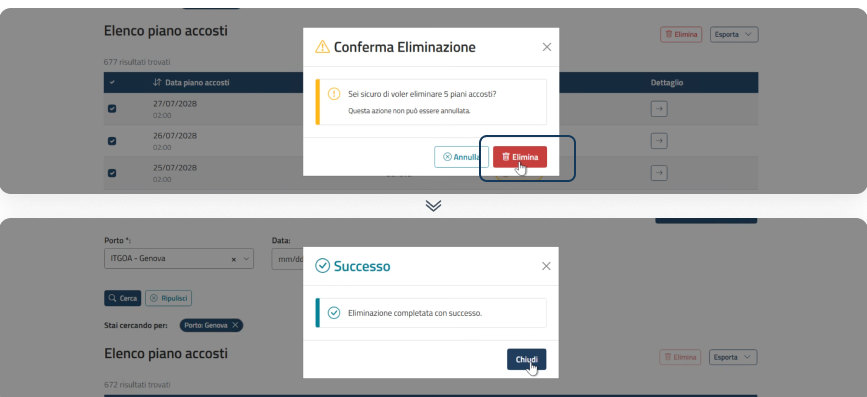
L'eliminazione comporterà la cancellazione istantanea dei piani accosto.
Cancellazione piano accosti
Passaggi per cancellare un piano accosti da dettaglio
Dopo aver creato uno o più piani accosti, l'utente può eliminarli tramite i seguenti passaggi:
Cancellazione tramite azione nel dettaglio del piano accosto
Nell'elenco risultati della ricerca dei piani accosto è possibile accedere al dettaglio cliccando l'icona con la freccia.
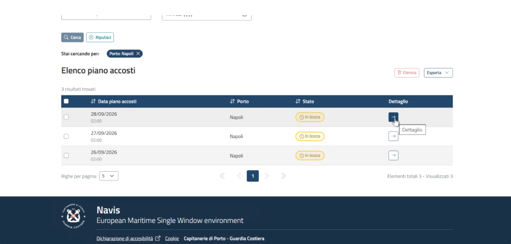
Finestra di conferma eliminazione e successo
Una volta all'interno del dettaglio, per eliminare il piano accosto cliccare il pulsante "Elimina". Il sistema mostra una finestra in cui l'utente deve confermare di essere sicuro di voler eliminare il piano accosto. Cliccare "Elimina" per confermare.
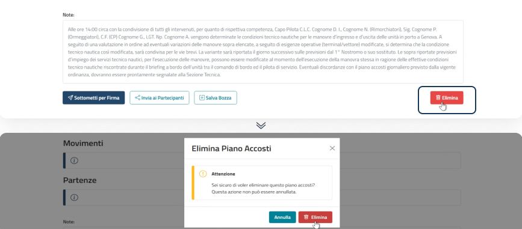
L'eliminazione comporterà la cancellazione istantanea dei piani accosto.
04.
Inserimento previsioni piano accosti
Una panoramica sul flusso di inserimento delle previsioni del piano accosti.
Profilo: Responsabile Locale - Accosti/Tecnica
Inserimento previsione piano accosti
Punto di accesso
Dalla dashboard è possibile accedere alle principali sezioni tramite le voci di menu.
Menu a tendina
Cliccando sulla voce "Gestione e Consultazione" viene visualizzato un menu a tendina, da cui è possibile accedere alla pagina di "Previsioni e piano accosti".
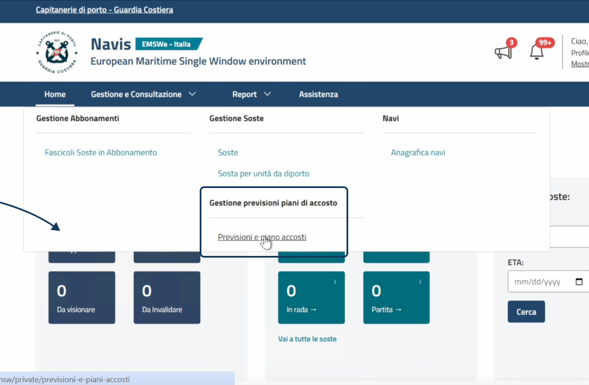
Inserimento previsione piano accosti
Passaggi per inserire previsioni sul piano accosti
L'utente può inserire previsioni sul piano accosti tramite i seguenti passaggi.
Dettaglio piano accosti
Nell'elenco risultati della ricerca dei piani accosto è possibile accedere al dettaglio cliccando l'icona con la freccia.
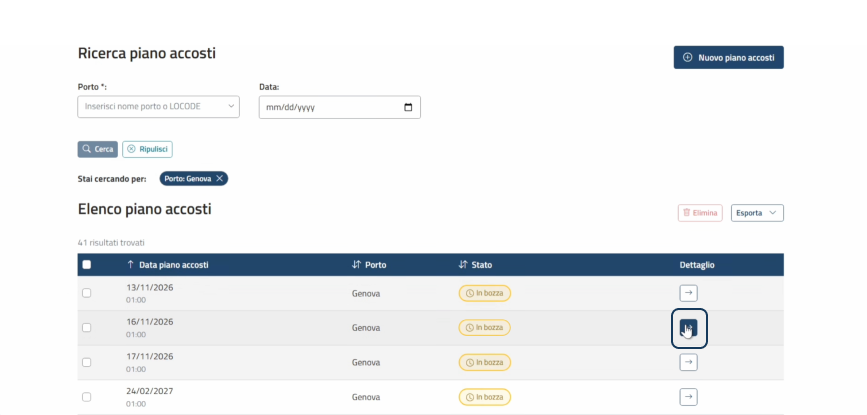
Aggiungi previsione
All'interno del dettaglio, per aggiungere una previsione, cliccare il pulsante "Aggiungi previsione".
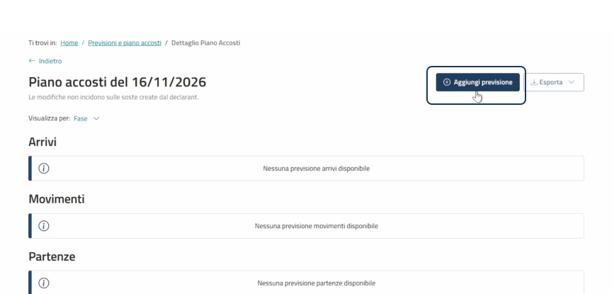
Ricerca nave
Ricercare la nave inserendo il nome o l'identificativo e successivamente cliccando il pulsante "Cerca".
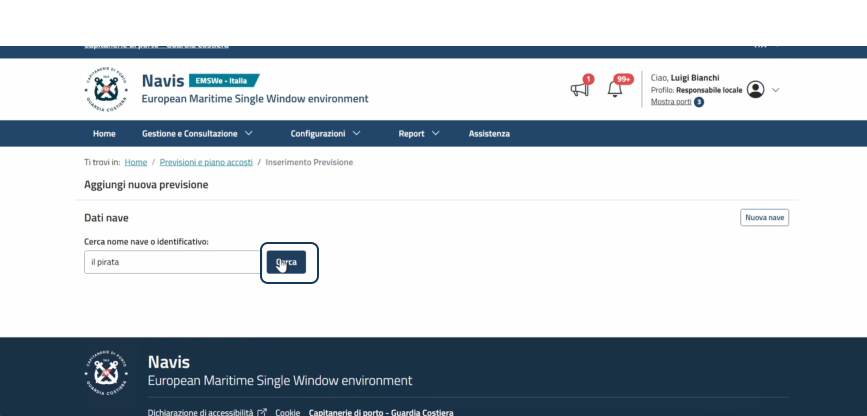
Selezione nave e soste presenti per la nave
Selezionare la nave e successivamente una delle soste presenti per la nave tramite radio button.
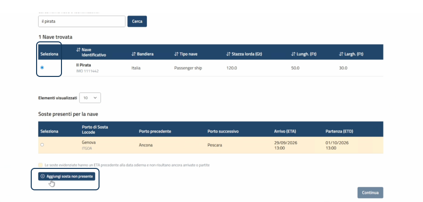
Continua inserimento
Per completare l'inserimento della previsione cliccare il pulsante "Continua".
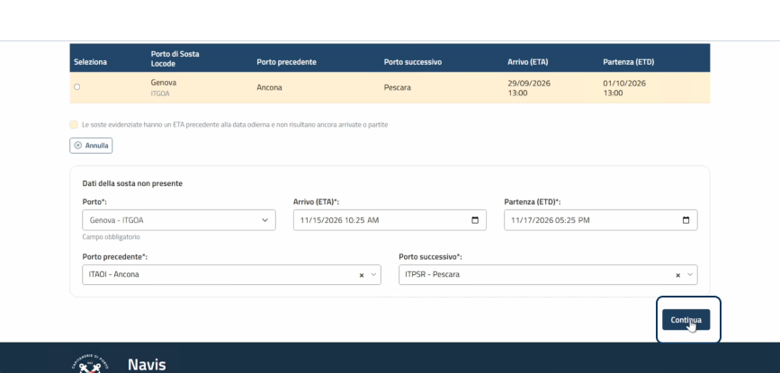
Selezione fase
Selezionare tramite menu a tendina una tipologia di fase, per esempio "Arrivo".
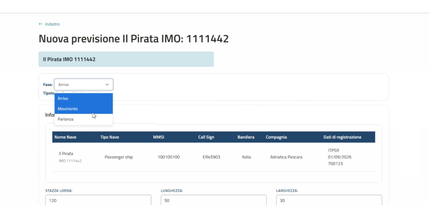
I passaggi successivi sono in fase di completamento in relazione alle segnalazioni emerse dagli ultimi collaudi.
05.
Modifica previsioni piano accosti
Una panoramica sul flusso di modifica delle previsioni del piano accosti.
Profilo: Responsabile Locale - Accosti/Tecnica
Modifica previsioni piano accosti
Passaggi per modificare una previsione nel piano accosti
L'utente può modificare le previsioni sul piano accosti tramite i seguenti passaggi.
Ricerca dettaglio piano accosti
Dopo aver ricercato il piano accosti tramite il campo "Porto" e/o "Data" cliccare il pulsante "Cerca". Nell'elenco risultati della ricerca dei piani accosto è possibile accedere al dettaglio cliccando l'icona con la freccia.
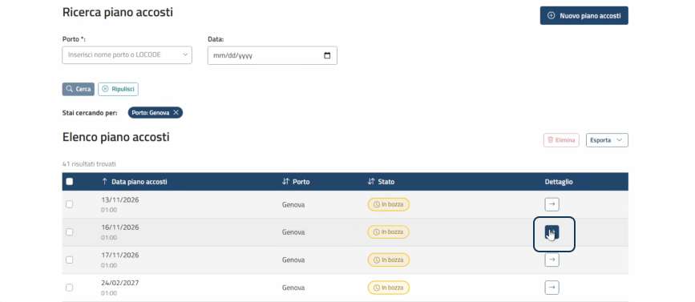
Modifica previsione
All'interno del dettaglio, cliccare il pulsante con l'icona della matita per la previsione che si intende modificare.

Modifica previsione piano accosti
All'interno del dettaglio della previsione, in modalità modifica, apporre le modifiche. Ad esempio, all'interno dei servizi tecnico nautici, indicare la presenza del pilotaggio, inserire la tipologia del pilotaggio e il numero dei piloti.
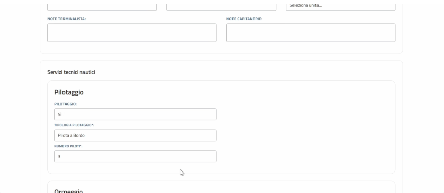
Salvataggio
Dopo aver apportato le modifiche, per salvarle, cliccare il pulsante "Salva".
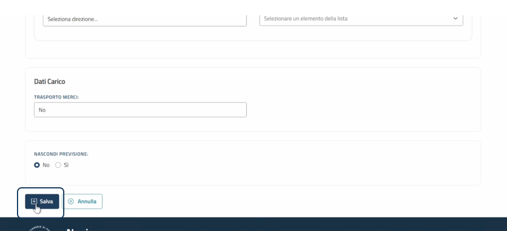
Conferma salvataggio
Il sistema mostra una finestra di conferma e, dopo aver cliccato il pulsante "Salva", se la previsione piano accosti è in uso presso un piano accosti in bozza l'utente viene informato tramite una seconda finestra. Cliccare "Conferma" per proseguire.
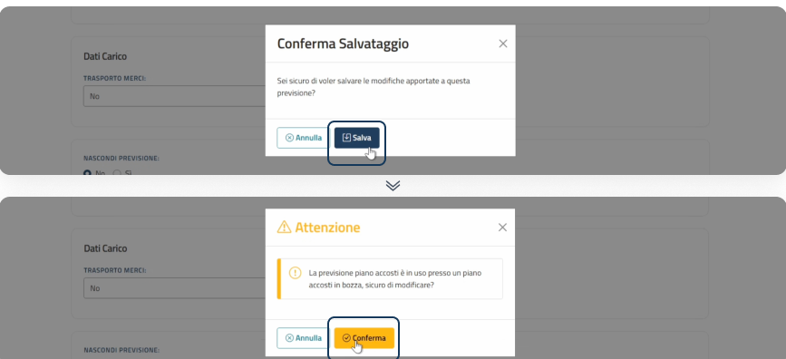
Salvataggio
Dopo aver confermato, il sistema mostra una finestra informativa dell'avvenuta modifica della previsione. Chiudere la finestra tramite il pulsante "Chiudi".
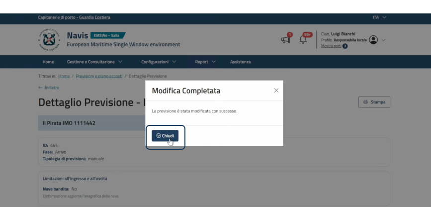
06.
Cancellazione previsione piano accosti
Una panoramica sul flusso di cancellazione delle previsioni del piano accosti.
Profilo: Responsabile Locale - Accosti/Tecnica
Cancellazione previsioni piano accosti
Passaggi per cancellare una previsione
L'utente può cancellare le previsioni sul piano accosti tramite i seguenti passaggi.
Ricerca dettaglio piano accosti
Dopo aver ricercato il piano accosti tramite il campo "Porto" e/o "Data" cliccare il pulsante "Cerca". Nell'elenco risultati della ricerca dei piani accosto è possibile accedere al dettaglio cliccando l'icona con la freccia.

Modalità modifica
All'interno del dettaglio, cliccare il pulsante con l'icona della matita per la previsione che si intende cancellare.
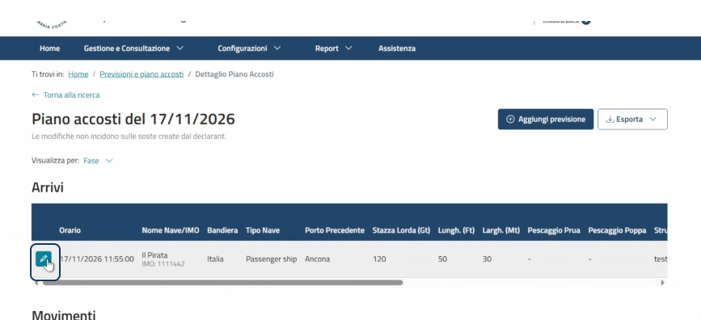
Annullamento modifica
All'interno del dettaglio della previsione, annullare la modalità modifica cliccando il pulsante "Annulla".
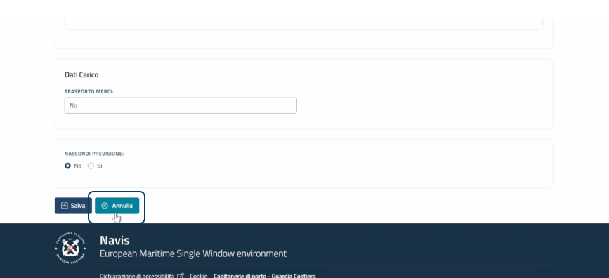
Elimina previsione
Dopo essere usciti dalla modalità modifica, per cancellare la previsione, cliccare il pulsante "Elimina".
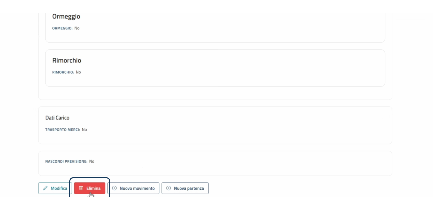
Conferma eliminazione
Il sistema mostra una finestra di conferma e, dopo aver cliccato il pulsante "Elimina", se la previsione piano accosti è in uso presso un piano accosti in bozza l'utente viene informato tramite una seconda finestra. Cliccare "Conferma" per proseguire.
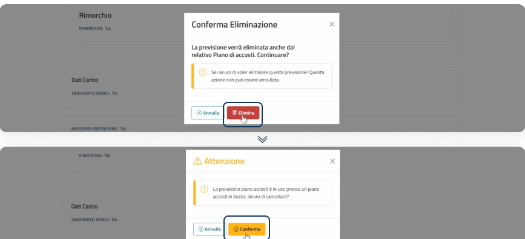
Eliminazione completata
Dopo aver confermato, il sistema mostra una finestra informativa dell'avvenuta eliminazione della previsione. Chiudere la finestra tramite il pulsante "Chiudi".
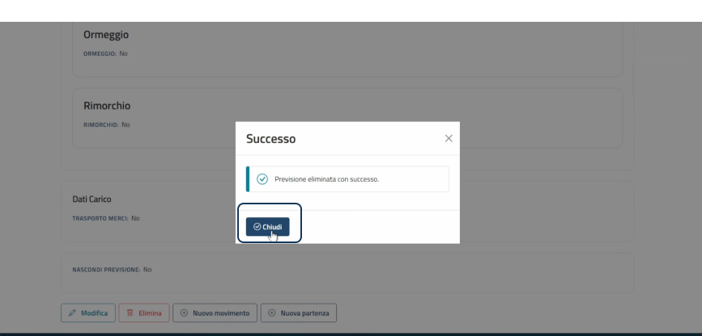
Una volta eliminata la previsione, l'operazione non potrà essere annullata.